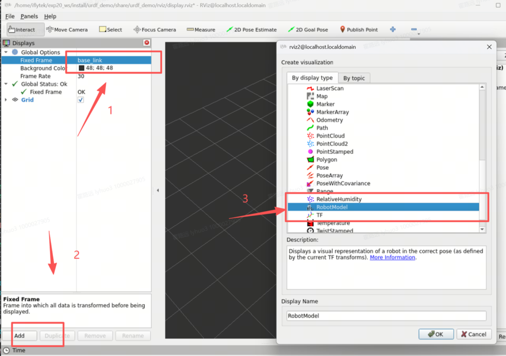
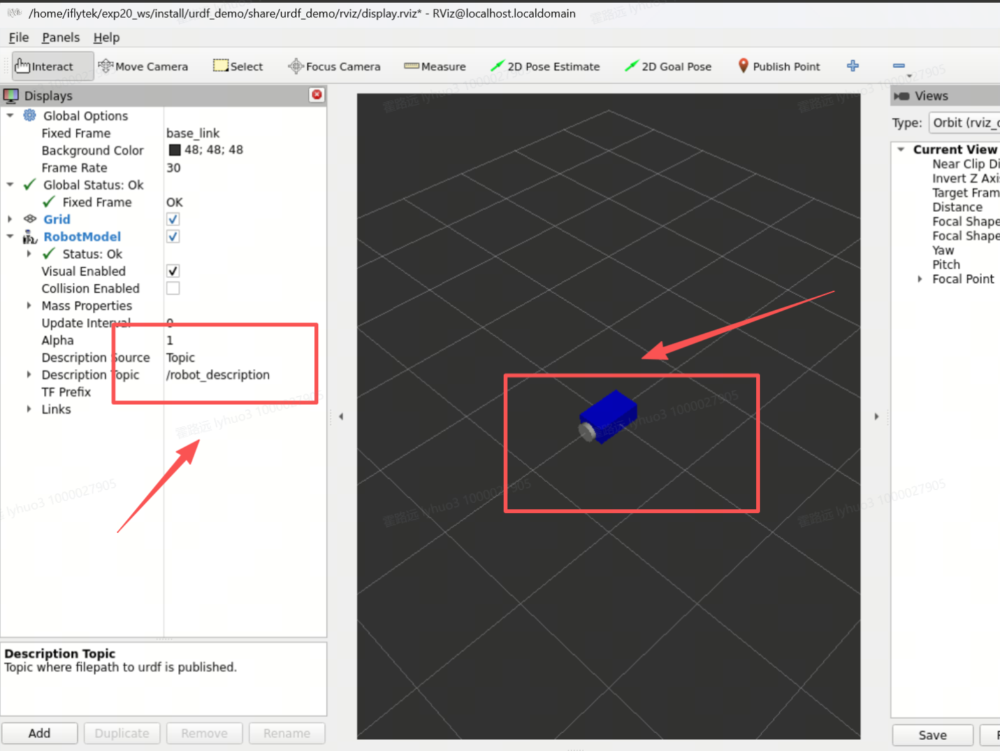
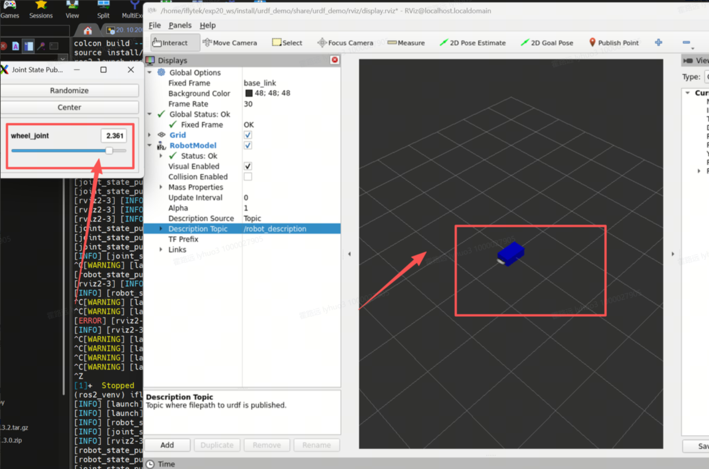

URDF 与 Xacro：给机器人造一份数字骨架
rviz2 里那台蓝底盘黑轮的小车，源头是一份 XML——URDF。它是 Rviz2/Gazebo/TF2/运动规划的唯一模型输入。本实验讲透 link 三重属性与 joint 六类型的原理，用 Xacro 宏语言把 150 行模型压缩到 80 行，并让惯性矩阵从"魔法数字"变成公式推导。
目标本课学完，你应该能做到
能阐述 URDF 中 link 三重属性各自的作用及其分离设计的工程意义——为什么渲染、碰撞检测、动力学计算需要独立定义。
能正确编写含多个 link 与 joint 的 URDF，用 Xacro 参数化建模，并用 xacro 工具把 .xacro 展开为标准 URDF。
独立构建简化差分驱动机器人（底盘 + 双轮 + 万向轮），在 rviz2 中加载并验证其运动学结构。
能为 B2 实验箱上的实际机器人编写含真实尺寸参数的 URDF，并在 rviz2 中验证。
难点：惯性矩阵不能拍脑袋——非法值会让 Gazebo 求解器发散、模型原地爆炸。
01问题引入：屏幕里的小车，是谁画的
robot_state_publisher 把它变成 TF 变换和三维模型，rviz2 里那台小车就是从这里"画"出来的。robot_description——它的内容就是一份 URDF 文件02先看现象：一份 XML，一台会动的车
diff_drive_robot.urdf，一条命令做结构体检：check_urdf diff_drive_robot.urdfros2 launch urdf_demo display.launch.py → RViz2 出现蓝底盘小车，拖滑块轮子绕轴转动robot name is: diff_drive_robot ---------- Successfully Parsed XML --------------- root Link: chassis has 3 child(ren)
03原理讲解
link 三重属性 × joint 六类型
建立在 EXP-19 的 TF 树之上——URDF 就是那棵树的源头文件：link 是节点，joint 是边。
| link 属性 | 作用 | 取值/几何体 | 何时必须 |
|---|---|---|---|
<visual> | 渲染外观（给 Rviz2 看） | box / cylinder / sphere / mesh（数万三角形也行） | 只想可视化时——可单独存在 |
<collision> | 物理碰撞检测（给 Gazebo 看） | 同上，但应简化为包围盒以降低实时计算量 | 仿真必须 |
<inertial> | 动力学：mass + 3×3 惯性矩阵 | ixx iyy izz ixy ixz iyz | 仿真必须（否则模型飞走） |
| joint 类型 | 自由度 | 典型场景 | 关键子标签 |
|---|---|---|---|
fixed | 0 | 传感器底座、万向轮脚轮 | origin |
revolute | 1（限位） | 机械臂肘/肩关节 | 必须 limit lower/upper + axis |
continuous | 1（无限转） | 驱动轮、履带 | axis |
prismatic | 1（滑轨） | 升降柱、滑动平台 | limit + axis |
floating | 6 | 自由漂浮体（不推荐手写） | — |
planar | 3 | 平面运动体（不推荐） | — |
<joint name="left_wheel_joint" type="continuous"> <origin xyz="0.0 -0.15 -0.03" rpy="0 0 0"/> <parent link="chassis"/> <child link="left_wheel"/> <axis xyz="0 1 0"/> </joint>类型在
type 属性上六选一（对照上表）；revolute 必须补 <limit lower upper/>。另注：URDF 坐标系遵循 REP-103 —— X 前、Y 左、Z 上；origin 的求值顺序是先 rpy 旋转、再 xyz 平移。
两个发布者如何合力把车"画"出来
robot_description = open(urdf_path).read() Node(package='robot_state_publisher', parameters=[{'robot_description': robot_description}]) Node(package='joint_state_publisher_gui')少了注入或少了 GUI 节点，就是下面分解图里的两种断链。
惯性矩阵——从魔法数字到物理公式
例：底盘 0.40×0.25×0.08 m、质量 3.0 kg → ixx=0.017、iyy=0.042、izz=0.053。沿某轴的惯量 = 质量对该轴分布的"转动惰性"，垂直于该轴的边长平方贡献最大。
轮轴沿 Y：绕轴（Y）转动惯量小、绕直径大时看 h 贡献。r=0.05、L=0.03、m=0.2 代入即可，杜绝拍脑袋的 0.01。
ixx、iyy、izz 全部 > 0，且满足三角不等式 ixx+iyy≥izz 等。非法值会让 Gazebo 求解器发散——模型原地爆炸或瞬间飞出场景。
只做 Rviz2 可视化时惯性可省；进 Gazebo 前若懒得算，统一写 ixx=iyy=izz=1e-3（对角等值必正定），先跑通再精算。Xacro 则用公式自动算（见本段末 Xacro 主场，实操在 04 节）。
Xacro：参数与宏，公式即代码
建立在 link / joint 写法之上——把重复的尺寸、惯性与左右镜像收进参数和宏，一行调用生成两轮。
<robot name="bot" xmlns:xacro="http://www.ros.org/wiki/xacro">
<xacro:property name="wheel_radius" value="0.05"/>
<xacro:property name="wheel_y" value="${chassis_width/2 - 0.02}"/>
<xacro:macro name="wheel" params="name parent x_reflect">
… <origin xyz="0 ${x_reflect * wheel_y} …"/> …
</xacro:macro>
<xacro:wheel name="left_wheel" parent="chassis" x_reflect="-1"/>
</robot>xmlns:xacro → 全部宏标签失效、宏调用 name 撞车 → 重复 link 解析失败（细目见 04 节坑表）。04实验步骤
URDF Doctor 症状诊断
检验工具三件套
# ① 语法+结构验证（输出根 link 与子链接数） $ check_urdf diff_drive_robot.urdf robot name is: diff_drive_robot ---------- Successfully Parsed XML --------------- root Link: chassis has 3 child(ren) # ② 生成 link-joint 拓扑图（需 liburdfdom-tools） $ sudo apt install liburdfdom-tools -y $ urdf_to_graphiz diff_drive_robot.urdf # → 生成 PDF：chassis 三叉连 left_wheel / right_wheel / front_caster # ③ Xacro 展开为标准 URDF（验证宏语法+生成文件） $ sudo apt install ros-humble-xacro -y $ xacro ~/exp20_ws/src/urdf_demo/urdf/diff_drive_robot.urdf.xacro \ > ~/exp20_ws/src/urdf_demo/urdf/diff_drive_robot_expanded.urdf $ head -80 diff_drive_robot_expanded.urdf # 观察：左右轮已被完整展开为独立 link/joint；Xacro 版约 80 行，展开约 150 行 # 4 轮/6 轮车压缩比更高（4×~6×）——宏复用的复利
手写完整差分车 URDF（设计性任务）
ros2 pkg create urdf_demo --build-type ament_cmake 后建 urdf/ 子目录<!-- 核心三关节（完整文件见讲义） --> <material name="black"><color rgba="0.2 0.2 0.2 1.0"/></material> <!-- .... link chassis: box + mass 3.0 + ixx0.017 iyy0.042 izz0.053 .... --> <joint name="left_wheel_joint" type="continuous"> <origin xyz="0.0 -0.15 -0.03" rpy="0.0 0.0 0.0"/> <parent link="chassis"/> <child link="left_wheel"/> <axis xyz="0 1 0"/><!-- 绕 Y 轴转，与 REP-103 车体横向一致 --> </joint> <joint name="right_wheel_joint" type="continuous"> <origin xyz="0.0 0.15 -0.03" rpy="0.0 0.0 0.0"/> <parent link="chassis"/><child link="right_wheel"/> <axis xyz="0 1 0"/> </joint> <joint name="front_caster_joint" type="fixed"> <origin xyz="0.18 0.0 -0.055" rpy="0.0 0.0 0.0"/> <parent link="chassis"/><child link="front_caster"/> </joint>
# urdf_demo 包三处配置（RViz 可视化最小骨架） # package.xml 加 exec_depend：robot_state_publisher、joint_state_publisher_gui、rviz2、urdf # CMakeLists.txt：模型目录必须 install 到 share install(DIRECTORY urdf launch rviz DESTINATION share/${PROJECT_NAME}) # display.launch.py 关键三节点（参数注入用 open().read()） robot_description = open( os.path.join(pkg_share, 'urdf', 'diff_drive_robot.urdf')).read() Node(package='joint_state_publisher_gui', ...), Node(package='robot_state_publisher', parameters=[{'robot_description': robot_description}]), Node(package='rviz2', arguments=['-d', rviz_config]), $ ros2 launch urdf_demo display.launch.py # → RViz 出现小车：蓝底盘、黑轮、白万向轮；拖滑块，轮绕 Y 轴转动即通过
| 联动检查 | 预期 | 不满足时 |
|---|---|---|
| Fixed Frame = chassis | 模型居中显示 | Global Status 报错、黑屏 |
| RobotModel → Description Topic/Param 有值 | 外形出现 | 参数未注入或未 source install |
| 拖 left_wheel_joint 滑块 | 左轮绕 Y 旋转 | joint type 写成 fixed 或 GUI 没启动 |
Xacro 参数化重构（复用压缩到 80 行）
<!-- ① 属性层：尺寸/质量全部参数化 --> <robot name="diff_drive_robot" xmlns:xacro="http://www.ros.org/wiki/xacro"> <xacro:property name="chassis_width" value="0.25"/> <xacro:property name="chassis_height" value="0.08"/> <xacro:property name="wheel_radius" value="0.05"/> <xacro:property name="wheel_length" value="0.03"/> <xacro:property name="wheel_mass" value="0.2"/> <xacro:property name="wheel_y_offset" value="${chassis_width/2 - 0.02}"/> <xacro:property name="wheel_z_offset" value="${-chassis_height/2 + wheel_radius}"/> <!-- ② 惯性宏：公式即代码，Gazebo 永不爆炸 --> <xacro:macro name="cylinder_inertia" params="mass radius length"> <inertial><mass value="${mass}"/> <inertia ixx="${mass/12 * (3*radius*radius + length*length)}" ixy="0.0" ixz="0.0" iyy="${mass/12 * (3*radius*radius + length*length)}" iyz="0.0" izz="${mass/2 * radius*radius}"/> </inertial> </xacro:macro> <!-- ③ 轮宏一个模板 × x_reflect 镜像 = 左右两轮 --> <xacro:macro name="wheel" params="name parent x_reflect"> <link name="${name}"> … visual + collision + cylinder_inertia … </link> <joint name="${name}_joint" type="continuous"> <origin xyz="0.0 ${x_reflect * wheel_y_offset} ${wheel_z_offset}" rpy="0 0 0"/> <parent link="${parent}"/><child link="${name}"/><axis xyz="0 1 0"/> </joint> </xacro:macro> <xacro:wheel name="left_wheel" parent="chassis" x_reflect="-1"/> <xacro:wheel name="right_wheel" parent="chassis" x_reflect="1"/> </robot>
| 坑 | 症状 | 解法 |
|---|---|---|
| xmlns:xacro 未声明 | xacro 不识别 <xacro:macro> 标签 | robot 根标签加 xmlns:xacro="http://www.ros.org/wiki/xacro" |
| 宏调用 name 参数撞车 | 展开后重复 link/joint 名，解析失败 | 左右轮必须传不同 name；宏内用 ${name}_joint 拼接 |
| rgba 写成 0~255 | 颜色全白/报错 | URDF 颜色值域是 [0,1]，CSS 习惯要改 |
| continuous 与 revolute 混用 | 轮子被 limit 卡在 360° 内 | 轮子用 continuous；revolute 必须写 limit lower/upper |
| 宏定义与调用不在同一 robot 标签内 | "unknown macro name" | 定义必须先于调用且都在同一 <robot> 下 |
| launch 里硬编码 src/ 绝对路径 | install 后找不到模型 | 用 get_package_share_directory()——share 在 install/<pkg>/share/<pkg>/ |
📸 关键操作与现象截图（3 图）



05注意事项与避坑清单
- origin 求值顺序：先 rpy 旋转、再 xyz 平移——顺序颠倒视觉全变；开 TF Display 查坐标轴方向。
- 惯性矩阵对称正定：ixx/iyy/izz>0 且满足三角不等式，非法值 = Gazebo 爆炸；初学 1e-3 占位。
- joint 类型不可混：轮子 continuous（无限转）、肘关节 revolute + limit；给轮子设 revolute 会限死角度。
- Xacro 声明命名空间：xmlns:xacro 缺失则所有宏标签失效。
- Fixed Frame 用根 link：必须是 URDF 中真实存在的 link 名（通常为 chassis/base_link），否则 RobotModel 拒绝渲染。
- 路径用包索引：get_package_share_directory() 取路径，绝不要硬编码 src/ 下的绝对路径。
- 三种验证手段分工：check_urdf 查语法结构、urdf_to_graphiz 查拓扑外观、RViz 查几何与坐标。
| 工具 | 作用 | 命令 |
|---|---|---|
check_urdf | 语法+结构验证 | check_urdf model.urdf |
urdf_to_graphiz | 生成链接拓扑图 PDF | urdf_to_graphiz model.urdf |
| Rviz2 RobotModel | 外观/碰撞可视化 | Visual / Collision Enabled 开关 |
| Rviz2 TF Display | 验证各坐标系位置 | 观察 RGB 轴箭头方向 |
xacro | 宏展开与表达式求值 | xacro model.xacro > out.urdf |
06本课总结与验证题
XML 描述几何结构、运动学约束与动力学参数，Rviz2/Gazebo/TF2/运动规划共享同一模型源。
visual/collision/inertial 按用途分离，各场景只声明所需；fixed/revolute/continuous/prismatic 按自由度选型，两种 origin 语义严格区分。
joint_state_publisher 给关节角，robot_state_publisher 用 URDF 解算 TF，Rviz2 依据 Fixed Frame 绘制——状态与模型解耦。
property 收编尺寸、${} 表达式推导联动量、macro + 惯性公式消灭复制粘贴——80 行管住 150 行模型，6 轮再翻倍。
<collision> 整段删掉、其余不动：RViz2 与 Gazebo 里的表现分别如何？由此说明三属性为何必须分离。
参考答案与得分点
得分点：①RViz2 外观完全正常（只消费 visual）②Gazebo 中底盘无碰撞体——穿地、与他物互穿 ③分离是为了解耦三种消费方：渲染吃数万三角形、碰撞要实时求交、动力学要真实惯性——独立声明各取所需。（①②各 30%，③ 40%）left_wheel_joint 的 type="continuous" 改成 "fixed"，拖 joint_state_publisher_gui 滑块会看到什么？用哪一步能最快定位到这个改动？
参考答案与得分点
得分点：①左轮纹丝不动（fixed 零自由度焊死），右轮照常转——左右不对称 ②URDF Doctor"拖滑块轮子不动"处方：先查 joint type ③不可与 revolute 混：轮子要无限转；revolute 必带 limit lower/upper。（①②各 40%，③ 20%）xmlns:xacro="http://www.ros.org/wiki/xacro" 再运行 xacro diff_drive_robot.urdf.xacro，会发生什么？展开产物还能过 check_urdf 吗？